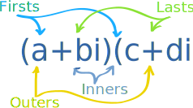
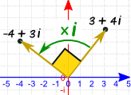
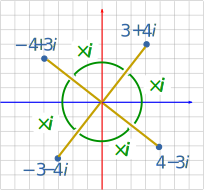
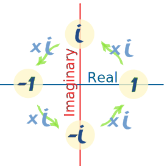
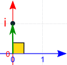
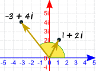
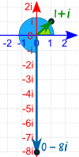

Complex Number Multiplication
A Complex Number is a combination of a Real Number and an Imaginary Number:
A Real Number is the type of number we use every day.
Examples: 12.38, ½, 0, −2000
An Imaginary Number, when squared gives a negative result:

The "unit" imaginary number when squared equals −1
i2 = −1
Examples: 5i, −3.6i, i/2, 500i
Examples of Complex Numbers:
| 3.6 + 4i | (real part is 3.6, imaginary part is 4i) | |
| −0.02 + 1.2i | (real part is −0.02, imaginary part is 1.2i) | |
| 25 − 0.3i | (real part is 25, imaginary part is −0.3i) |
Either part can be zero:
| 0 + 2i | (no real part, imaginary part is 2i) | same as 2i | ||
| 4 + 0i | (real part is 4, no imaginary part) | same as 4 |
Multiplying
To multiply complex numbers:
Each part of the first complex number gets multiplied by
each part of the second complex number
Just use "FOIL", which stands for "Firsts, Outers, Inners, Lasts" (see Binomial Multiplication for more details):
|  |
|
|
(a+bi)(c+di) = ac + adi + bci + bdi2 |
|
Like this:
Example: (3 + 2i)(1 + 7i)
Here is another example:
Example: (1 + i)2
But There is a Quicker Way!
Use this rule:
(a+bi)(c+di) = (ac−bd) + (ad+bc)i
Example:
Why Does That Rule Work?
It is just the "FOIL" method after a little work:
| (a+bi)(c+di) | = | ac + adi + bci + bdi2 | FOIL method | |
| = | ac + adi + bci − bd | (because i2=−1) | ||
| = | (ac − bd) + (ad + bc)i | (gathering like terms) |
And there you have the (ac − bd) + (ad + bc)i pattern.
This rule is certainly faster, but if you forget it, just remember the FOIL method.
Now let's see what multiplication looks like on the Complex Plane.
The Complex Plane
| This is the complex plane: |
It is a plane for complex numbers! |

| We can plot a complex number like 3 + 4i :
It is placed
|
 |
Multiplying By i
|
Let's multiply it by i: (3 + 4i) x i = 3i + 4i2
Which simplifies to (because i2 = −1): −4 + 3i |
 |
And here is the cool thing ... it's the same as rotating by a right angle (90° or π/2)
Was that just a weird coincidence?
|
Let's try multiplying by i again: (−4 + 3i) x i = −4i + 3i2 = −3 − 4i
and again: (−3 − 4i) x i = −3i − 4i2 = 4 − 3i
and again: (4 − 3i) x i = 4i − 3i2 = 3 + 4i |
 |
Well, isn't that stunning? Each time it rotates by a right angle, until it ends up where it started.
Let's try it on the number 1:
|
 | ||||||||||||||||
Each time a right angle rotation.
Choose your own complex number and try that for yourself, it is good practice.
Let's look more closely at angles now.
Polar Form
| Our friendly complex number 3 + 4i : |  |
|
|
Here it is again, but in polar form: |
 |
So the complex number 3 + 4i can also be shown as distance (5) and angle (0.927 radians).
How do we do the conversions?
Example: the number 3 + 4i
We can do a Cartesian to Polar conversion:
- r = √(x2 + y2) = √(32 + 42) = √25 = 5
- θ = tan-1 (y/x) = tan-1 (4/3) = 0.927 (to 3 decimals)
We can also take Polar coordinates and convert them to Cartesian coordinates:
- x = r × cos( θ ) = 5 × cos( 0.927 ) = 5 × 0.6002... = 3 (close enough)
- y = r × sin( θ ) = 5 × sin( 0.927 ) = 5 × 0.7998... = 4 (close enough)
In fact, a common way to write a complex number in Polar form is
| x + iy | = | r cos θ + i r sin θ |
| = | r(cos θ + i sin θ) |
And "cos θ + i sin θ" is often shortened to "cis θ", so:
x + iy = r cis θ
cis is just shorthand for cos θ + i sin θ
So we can write:3 + 4i = 5 cis 0.927
In some subjects, like electronics, "cis" is used a lot!
Now For Some More Multiplication
Let's try another multiplication:
Example: Multiply 1+i by 3+i
And here is the result on the Complex Plane:

But it is more interesting to see those numbers in Polar Form:
Example: (continued)
Convert 1+i to Polar:
- r = √(12 + 12) = √2
- θ = tan-1 (1/1) = 0.785 (to 3 decimals)
Convert 3+i to Polar:
- r = √(32 + 12) = √10
- θ = tan-1 (1/3) = 0.322 (to 3 decimals)
Convert 2+4i to Polar:
- r = √(22 + 42) = √20
- θ = tan-1 (4/2) = 1.107 (to 3 decimals)
Have a look at the r values for a minute. Are they related somehow?
And what about the θ values?
Here is that multiplication in one line (using "cis"):
(√2 cis 0.785) × (√10 cis 0.322) = √20 cis 1.107
This is the interesting thing:
- √2 x √10 = √20
- 0.785 + 0.322 = 1.107
So:
The magnitudes get multiplied.
And the angles get added.
When multiplying in Polar Form: multiply the magnitudes, add the angles.

And that is why multiplying by i rotates by a right angle:
Squaring
To square a complex number, multiply it by itself:
- multiply the magnitudes: magnitude × magnitude = magnitude2
- add the angles: angle + angle = 2 , so we double them.
Result: square the magnitudes, double the angle.

Example: Let us square 1 + 2i:
On the diagram the angle looks to be (and is!) doubled.
Also:
- The magnitude of (1+2i) = √(12 + 22) = √5
- The magnitude of (−3+4i) = √(32 + 42) = √25 = 5
So the magnitude got squared, too.
In general, a complex number like:
r(cos θ + i sin θ)
When squared becomes:
r2(cos 2θ + i sin 2θ)
(the magnitude r gets squared and the angle θ gets doubled.)
Or in the shorter "cis" notation:
(r cis θ)2 = r2 cis 2θ
De Moivre's Formula
And the mathematician Abraham de Moivre found it works for any integer exponent n:
[ r(cos θ + i sin θ) ]n = rn(cos nθ + i sin nθ)
(the magnitude becomes rn the angle becomes nθ.)
Or in the shorter "cis" notation:
(r cis θ)n = rn cis nθ

Example: What is (1+i)6
Convert 1+i to Polar:
- r = √(12 + 12) = √2
- θ = tan-1 (1/1) = π/4
In "cis" notation: 1+i = √2 cis π/4
Now, with an exponent of 6, r becomes r6, θ becomes 6θ:
(√2 cis π/4)6 = (√2)6 cis 6π/4 = 8 cis 3π/2
The magnitude is now 8, and the angle is 3π/2 (=270°)
Which is also 0−8i (see diagram)
Summary
- Use "FOIL" to multiply complex numbers,
- Or use the formula:
(a+bi)(c+di) = (ac−bd) + (ad+bc)i
- Or use polar form and then multiply the magnitudes and add the angles.
- De Moivre's Formula can be used for integer exponents:
[ r(cos θ + i sin θ) ]n = rn(cos nθ + i sin nθ)
- Polar form r cos θ + i r sin θ is often shortened to r cis θ